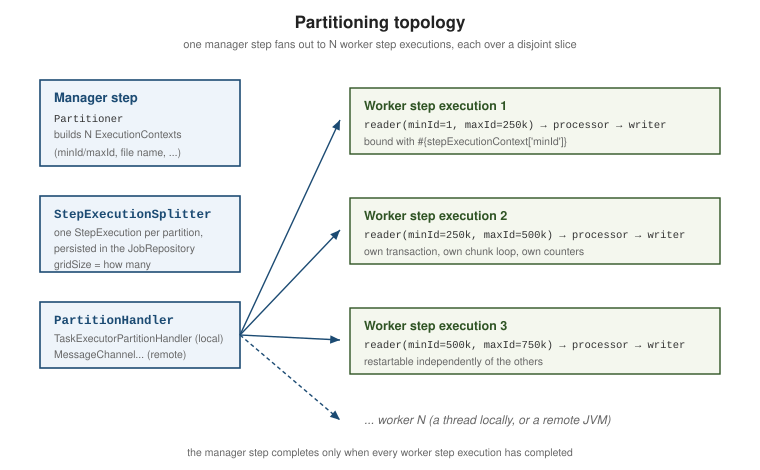
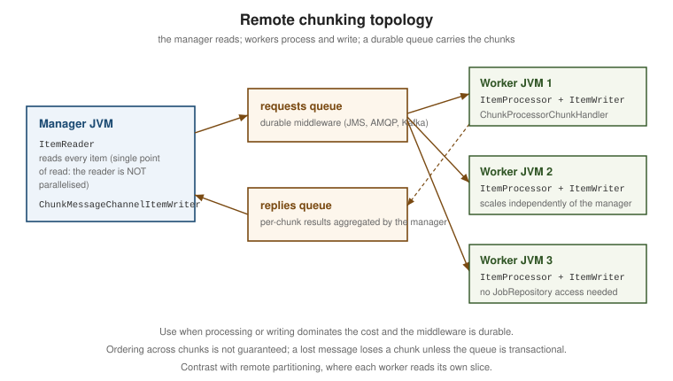

Scaling & parallel processing
|
This content was generated with the assistance of AI and should be verified against the official documentation before being relied on in production. |
Spring Batch offers several ways to use more than one thread or more than one machine. They differ in what they parallelise, and choosing the wrong one adds complexity without adding speed.
Measure first
Before any of this: find out what is slow. Most batch jobs that "need to be parallelised" are actually
waiting on one query without an index, an ItemProcessor that issues a lookup per item, or a chunk size of 1.
Parallelising a job with those problems multiplies the load without improving the elapsed time — and often
makes it worse by adding contention.
Establish a baseline from the step’s own counters and timings (Profiling & tuning), fix the obvious costs, and only then reach for the options below. Every one of them makes the job harder to reason about and to restart.
Choosing an option
| Option | Parallelises | Choose it when |
|---|---|---|
Multi-threaded step |
Chunks of one step, in one JVM |
One step dominates and the reader can be made thread-safe or is naturally stateless. |
Parallel steps (split flow) |
Whole steps, in one JVM |
Several independent steps can run at once. |
Concurrent chunk step (6.0) |
The processor, within each chunk, in one JVM |
The processor is slow and I/O-bound, but you want to keep a single-threaded reader and writer, restart and skip. |
Local chunking (6.0) |
Whole chunks, in one JVM |
Processing and writing dominate, one reader thread is enough, and the delegate writer is thread-safe. |
|
The processing stage, in one JVM |
The processor is slow and I/O-bound (a remote call) while reading and writing are cheap. |
Local partitioning |
One step, over disjoint slices, in one JVM |
The input splits cleanly by key and each slice can be read independently. |
Remote partitioning |
One step, over disjoint slices, across JVMs |
As above, but one machine is not enough; workers can reach the data source. |
Remote chunking |
Processing and writing, across JVMs |
Processing/writing dominates, reading is cheap, and durable middleware is available. |
Single-JVM options
Multi-threaded step
Give the step a TaskExecutor and each chunk is processed on its own thread:
@Bean
public Step multiThreadedStep(JobRepository jobRepository, PlatformTransactionManager tx,
ItemReader<Trade> reader, ItemWriter<Trade> writer,
TaskExecutor batchTaskExecutor) {
return new StepBuilder("multiThreadedStep", jobRepository)
.<Trade, Trade>chunk(500, tx)
.reader(reader)
.writer(writer)
.taskExecutor(batchTaskExecutor)
.build();
}
@Bean
public TaskExecutor batchTaskExecutor() {
ThreadPoolTaskExecutor executor = new ThreadPoolTaskExecutor();
executor.setCorePoolSize(8);
executor.setMaxPoolSize(8);
executor.setQueueCapacity(16);
executor.setThreadNamePrefix("batch-");
return executor;
}The catch is state. read() is called concurrently, and most stateful readers — cursor readers above all — are not thread-safe. Three ways out:
-
use a naturally restartable, stateless reader such as
JdbcPagingItemReaderwith a unique sort key; -
wrap the reader:
SynchronizedItemStreamReaderserialisesread()while leaving processing and writing parallel; -
partition instead, so each thread has its own reader over its own slice (usually the better answer).
@Bean
public SynchronizedItemStreamReader<Trade> synchronizedReader(JdbcCursorItemReader<Trade> delegate) {
return new SynchronizedItemStreamReader<>(delegate); // 6.0: the delegate is a constructor argument
}The processor and writer must be thread-safe too — no mutable instance fields — and note that the
step-scoped ExecutionContext saved by a multi-threaded step cannot describe a single "position", so such a
step is not reliably restartable. Set saveState(false) on the reader and plan to rerun the whole step.
Parallel steps
A split flow runs independent steps concurrently — see Step flow & listeners:
@Bean
public Job parallelLoadJob(JobRepository jobRepository, Flow customerFlow, Flow productFlow,
Step aggregateStep) {
return new JobBuilder("parallelLoadJob", jobRepository)
.start(customerFlow)
.split(new SimpleAsyncTaskExecutor("split-"))
.add(productFlow)
.next(aggregateStep)
.end()
.build();
}This is the cheapest and safest option when it applies: each step keeps its own single-threaded semantics and remains individually restartable.
The 6.0 concurrent chunk step and local chunking
Spring Batch 6.0 adds two more single-JVM options, and they are easy to confuse.
Concurrent item processing inside one chunk. ChunkOrientedStepBuilder accepts an AsyncTaskExecutor. The step
still reads a chunk sequentially on one thread, but it submits process(item) for every item of the chunk to the
executor, waits for all of them, and then writes the chunk in a single transaction. Chunks are therefore still
processed one after another; what runs concurrently is the processor within a chunk. The reader and the writer
need not be thread-safe, the step keeps its normal restart, skip and retry behaviour, and the concurrency is capped
by the chunk size:
@Bean
public Step concurrentChunkStep(JobRepository jobRepository, PlatformTransactionManager tx,
ItemReader<Trade> reader,
ItemProcessor<Trade, SettledTrade> processor,
ItemWriter<SettledTrade> writer,
ThreadPoolTaskExecutor batchTaskExecutor) { // an AsyncTaskExecutor
return new ChunkOrientedStepBuilder<Trade, SettledTrade>("concurrentChunkStep", jobRepository, 50)
.reader(reader)
.processor(processor)
.writer(writer)
.transactionManager(tx)
.taskExecutor(batchTaskExecutor)
.build();
}Local chunking. ChunkTaskExecutorItemWriter is the other piece: it hands each chunk to a TaskExecutor, so
several chunks are processed and written concurrently while one thread keeps reading. It lives in
org.springframework.batch.integration.chunk, so local chunking needs the spring-batch-integration
dependency, and its Javadoc is explicit that transaction management of the chunk and fault tolerance are the
responsibility of the delegate chunk processor it wraps:
@Bean
public Step localChunkingStep(JobRepository jobRepository, PlatformTransactionManager tx,
ItemReader<Trade> reader,
ItemProcessor<Trade, SettledTrade> processor,
ItemWriter<SettledTrade> delegateWriter,
TaskExecutor batchTaskExecutor) {
// the constructor takes a ChunkProcessor, so wrap the processor/writer pair first
ChunkTaskExecutorItemWriter<Trade> concurrentWriter =
new ChunkTaskExecutorItemWriter<>(
new SimpleChunkProcessor<Trade, SettledTrade>(processor, delegateWriter), batchTaskExecutor);
return new ChunkOrientedStepBuilder<Trade, Trade>("localChunkingStep", jobRepository, 50)
.reader(reader)
.writer(concurrentWriter)
.transactionManager(tx)
.build();
}Compared with a multi-threaded step this keeps a single reader thread, so a restartable reader stays restartable.
Multi-process options
AsyncItemProcessor / AsyncItemWriter
These come from spring-batch-integration and parallelise only the processing stage. The async processor
returns a Future per item; the async writer unwraps them before delegating:
@Bean
public AsyncItemProcessor<Trade, Trade> asyncProcessor(ItemProcessor<Trade, Trade> delegate,
TaskExecutor batchTaskExecutor) {
AsyncItemProcessor<Trade, Trade> processor = new AsyncItemProcessor<>(delegate); // 6.0: constructor argument
processor.setTaskExecutor(batchTaskExecutor);
return processor;
}
@Bean
public AsyncItemWriter<Trade> asyncWriter(ItemWriter<Trade> delegate) {
return new AsyncItemWriter<>(delegate);
}
@Bean
public Step asyncStep(JobRepository jobRepository, PlatformTransactionManager tx,
ItemReader<Trade> reader,
AsyncItemProcessor<Trade, Trade> asyncProcessor,
AsyncItemWriter<Trade> asyncWriter) {
return new StepBuilder("asyncStep", jobRepository)
.<Trade, Future<Trade>>chunk(500, tx)
.reader(reader)
.processor(asyncProcessor)
.writer(asyncWriter)
.build();
}Note the step’s output type: Future<Trade>. This is the right tool when the processor waits on something
remote; it does nothing for a CPU-bound processor.
Partitioning
Partitioning splits one step into N step executions, each over a disjoint slice, each with its own reader, processor, writer, transaction, counters and restartability.

The pieces:
-
Partitioner— produces one namedExecutionContextper partition, holding whatever the worker needs (a key range, a file name). The six classic break-up approaches are compared in Architecture & processing strategies. -
StepExecutionSplitter— turns those contexts into persistedStepExecutions, so each partition is visible and restartable in theJobRepository. -
PartitionHandler— runs them.TaskExecutorPartitionHandlerruns them locally on a thread pool;MessageChannelPartitionHandlersends them to remote workers. -
gridSize— how many partitions to create. A hint to thePartitioner, not a thread count; the pool size governs how many run at once.
@Bean
public Partitioner tradeIdRangePartitioner(JdbcTemplate jdbcTemplate) {
return gridSize -> {
long min = jdbcTemplate.queryForObject("SELECT MIN(id) FROM trade", Long.class);
long max = jdbcTemplate.queryForObject("SELECT MAX(id) FROM trade", Long.class);
long targetSize = (max - min) / gridSize + 1;
Map<String, ExecutionContext> partitions = new HashMap<>();
long start = min;
for (int i = 0; i < gridSize; i++) {
ExecutionContext context = new ExecutionContext();
context.putLong("minId", start);
context.putLong("maxId", Math.min(start + targetSize - 1, max));
partitions.put("partition" + i, context);
start += targetSize;
}
return partitions;
};
}
@Bean
public Step partitionedLoadStep(JobRepository jobRepository,
Partitioner tradeIdRangePartitioner,
Step workerStep,
TaskExecutor batchTaskExecutor) {
TaskExecutorPartitionHandler handler = new TaskExecutorPartitionHandler();
handler.setStep(workerStep);
handler.setTaskExecutor(batchTaskExecutor);
handler.setGridSize(8);
return new StepBuilder("partitionedLoadStep", jobRepository)
.partitioner("workerStep", tradeIdRangePartitioner)
.partitionHandler(handler)
.build();
}The worker step binds its slice by late binding, which is why its reader must be @StepScope:
@Bean
@StepScope
public JdbcPagingItemReader<Trade> partitionedReader(
DataSource dataSource,
@Value("#{stepExecutionContext['minId']}") Long minId,
@Value("#{stepExecutionContext['maxId']}") Long maxId) throws Exception { // build() declares Exception
return new JdbcPagingItemReaderBuilder<Trade>()
.name("partitionedReader")
.dataSource(dataSource)
.selectClause("SELECT id, isin, quantity, price")
.fromClause("FROM trade")
.whereClause("WHERE id BETWEEN :minId AND :maxId")
.parameterValues(Map.of("minId", minId, "maxId", maxId))
.sortKeys(Map.of("id", Order.ASCENDING))
.pageSize(1000)
.rowMapper(new TradeRowMapper())
.build();
}Partitioning is usually the best of these options: each partition is an ordinary single-threaded step, so restart, skip and retry all behave normally, and only the failed partitions rerun.
Remote chunking

In remote chunking the manager reads every item and sends chunks over a MessageChannel; remote workers
process and write them and reply with the outcome. Reading is not parallelised, so this only pays when
processing or writing dominates.
The wiring, with ChunkMessageChannelItemWriter on the manager and ChunkProcessorChunkHandler on the
workers, is shown in
Spring Batch Integration. Two requirements are
non-negotiable: the middleware must be durable and transactional (an in-memory channel loses chunks), and
the items must be serialisable.
Remote partitioning and the remote step
Remote partitioning keeps the partitioning model but runs the workers in other JVMs:
MessageChannelPartitionHandler sends each partition’s StepExecution request over Spring Integration, and
workers execute the step against the shared JobRepository. Because each worker reads its own slice, the
manager is not a bottleneck — which is why remote partitioning usually scales further than remote chunking.
Spring Batch 6.0 adds a remote step abstraction that formalises "execute this step somewhere else", so the manager side no longer needs the hand-rolled aggregation that earlier versions required.
The DeployerPartitionHandler (from Spring Cloud Task) launches each partition as a new deployed
application — a Kubernetes pod, a Cloud Foundry task — instead of a long-running worker. It is linked, not
documented in depth here; see Cloud-native batch.
Worked example: 1000 trades, six ways
The running example of this section is the trade settlement: 1000 rows in a trade table, each turned into a
settled_trade row with its notional value (quantity times price). To make the effect of parallelism visible,
the processor sleeps 5 ms per trade — a stand-in for the remote pricing call — and every variant uses chunks of
50, a four-thread pool and an in-memory H2 database. The job repository, on Spring Batch 6.0.6 and Spring Boot
4.1.2 (Java 17), is the same each time, and the table is emptied between runs.
| Variant | Elapsed | Rows written, by thread |
|---|---|---|
Single-threaded step |
6267 ms |
|
Multi-threaded step ( |
1572 ms |
|
|
1736 ms |
|
Local chunking ( |
2065 ms |
|
6.0 concurrent chunk step ( |
1966 ms |
|
Local partitioning, four partitions |
1739 ms |
|
Ideal speed-up on four threads is 4x (about 1.6 s); every variant lands between 3x and 4x, and the differences between them are a few hundred milliseconds on single runs, which is the point of "measure first": the choice is made on restartability and operability, not on the last bit of speed. What does differ is the bookkeeping. A multi-threaded step reports 25 commits instead of 21 for the same data, and the step statuses of the partitioned run are the most informative of all, because the partitions are real step executions:
job partitionedJob -> COMPLETED (145 ms)
step status read write commit
partitionedLoadStep COMPLETED 1000 1000 24
workerStep:partition0 COMPLETED 250 250 6
workerStep:partition1 COMPLETED 250 250 6
workerStep:partition2 COMPLETED 250 250 6
workerStep:partition3 COMPLETED 250 250 6(That run used no simulated latency, which is why it finishes in 145 ms.) Each worker step execution is named
<worker step>:<partition key>, and the manager’s counters are the sum of the workers'. The manager shows 24
commits for 1000 items in chunks of 50: each worker commits its five chunks plus one more transaction for the
final read that finds the end of its slice, six per partition. (The single-threaded step above likewise reports 21
commits for 20 chunks.)
Restarting a partitioned step
The restartability claim is easy to check. A flag makes the processor fail on trade 600, which belongs to
workerStep:partition2. The first execution fails; the flag is cleared and the same job instance is restarted:
--- first execution (id 1)
job partitionedJob -> FAILED (180 ms)
step status read write commit
partitionedLoadStep FAILED 850 800 19
workerStep:partition0 COMPLETED 250 250 6
workerStep:partition1 COMPLETED 250 250 6
workerStep:partition2 FAILED 100 50 1
workerStep:partition3 COMPLETED 250 250 6
--- restart (execution id 2, same instance true)
job partitionedJob -> COMPLETED (61 ms)
step status read write commit
partitionedLoadStep COMPLETED 200 200 5
workerStep:partition2 COMPLETED 200 200 5
--- all step executions of the instance
stepExec=1 jobExec=1 partitionedLoadStep FAILED read=850 commit=19
stepExec=2 jobExec=1 workerStep:partition3 COMPLETED read=250 commit=6
stepExec=3 jobExec=1 workerStep:partition2 FAILED read=100 commit=1
stepExec=4 jobExec=1 workerStep:partition1 COMPLETED read=250 commit=6
stepExec=5 jobExec=1 workerStep:partition0 COMPLETED read=250 commit=6
stepExec=6 jobExec=2 partitionedLoadStep COMPLETED read=200 commit=5
stepExec=7 jobExec=2 workerStep:partition2 COMPLETED read=200 commit=5
settled_trade rows: 1000The restart creates step executions only for what was unfinished: partition 2 resumes after the 50 rows it had
already committed (its paging reader saved its position in the step ExecutionContext) and reads the remaining
200, and the other three partitions are not touched. No trade was written twice, and all 1000 rows are present.
Decoupling stages with a bounded queue
The SEDA-style option from
Spring Batch Integration belongs in this list too: a
producer step writes the trades into a bounded BlockingQueue, a consumer step reads them out, and a split flow
runs both at once. With a 100-slot queue and a 3 ms processor on the consumer side, both steps start in the same
millisecond, and the producer, which does no slow work of its own, finishes only about 3.7 s later — paced by the
consumer, which is the back-pressure working:
job sedaJob -> COMPLETED (4767 ms)
step status read write commit
consumeStep COMPLETED 1000 1000 21 16:19:24.770668 -> 16:19:29.518583
produceStep COMPLETED 1000 1000 21 16:19:24.770656 -> 16:19:28.426143The consumer ends about a second after the producer: it drains the last queued trades and then waits out its
500 ms reader timeout. BlockingQueueItemReader signals "no more items" by returning null after that timeout
(one second unless setTimeout says otherwise), so choose it larger than the longest stall of the producer, or a
slow producer is mistaken for the end of the input.
Remote chunking and remote partitioning, run for real
Both remote options were exercised with a manager JVM and two worker JVMs, a RabbitMQ 4 broker and a PostgreSQL 17
database (all as Docker containers on one machine), using the spring-batch-integration wiring that
Spring Batch Integration explains. The workers ran the same
3 ms processor.
job remoteChunkingJob -> COMPLETED (2138 ms)
step status read write commit
managerStep COMPLETED 1000 2000 21
rows written by worker-1 500
rows written by worker-2 500The manager read all 1000 items and shipped them in 20 chunks of 50; the workers split the writes evenly. The
manager’s writeCount is 2000 for 1000 items, because the manager counts the chunk it sent and then applies each
worker’s step contribution on top: do not assert on the write count of a remote-chunking manager step. For remote
partitioning the repository holds the real picture, since each worker updates its own step execution there:
id | step_name | status | r | w | c
----+-----------------------+-----------+------+------+----
4 | remotePartitionedStep | COMPLETED | 1000 | 1000 | 20
5 | workerStep:partition3 | COMPLETED | 250 | 250 | 5
6 | workerStep:partition2 | COMPLETED | 250 | 250 | 5
7 | workerStep:partition1 | COMPLETED | 250 | 250 | 5
8 | workerStep:partition0 | COMPLETED | 250 | 250 | 5(The manager’s in-memory JobExecution still listed the four worker executions as STARTING when the call
returned, because the workers update the repository, not the manager’s objects — query the repository for
partition status.) The manager step in this run used pollInterval(500) and so needed no reply channel.
Trade-offs
| Option | Restartability | Ordering | Middleware |
|---|---|---|---|
Multi-threaded step |
Poor — position cannot be saved reliably; rerun the step |
Not preserved |
None |
Parallel steps (split) |
Good — each step restarts independently |
Per step |
None |
Concurrent chunk step (6.0) |
As the underlying step |
Preserved within the step (results are collected in item order) |
None |
Local chunking (6.0) |
Reader position only; chunk completion is not tracked individually |
Not preserved across chunks |
None |
|
As the underlying step |
Preserved (the writer unwraps in order) |
None |
Local partitioning |
Excellent — only failed partitions rerun |
Per partition |
None |
Remote partitioning |
Excellent — per-partition |
Per partition |
Required, durable |
Remote chunking |
Moderate — depends on reply handling |
Not preserved across chunks |
Required, durable and transactional |